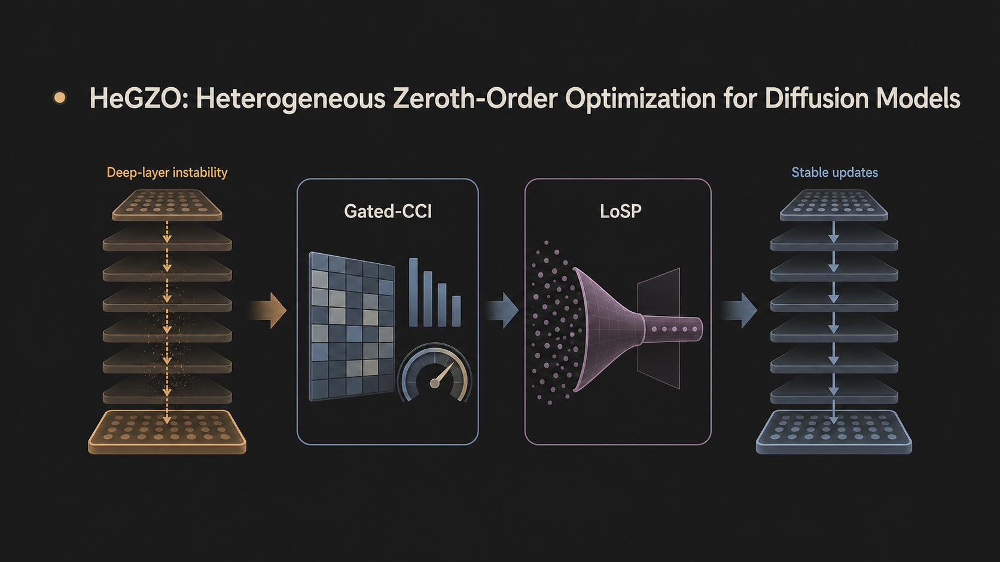
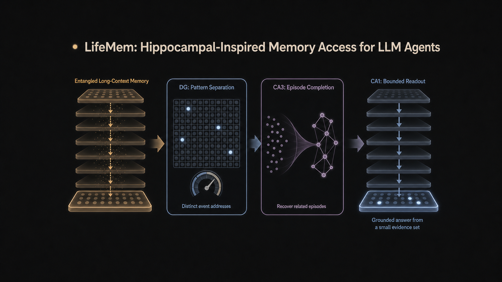
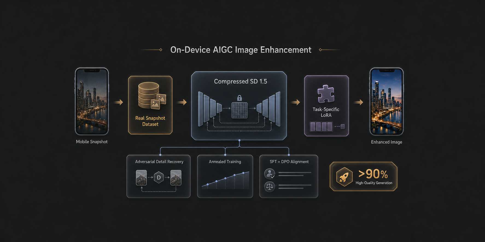
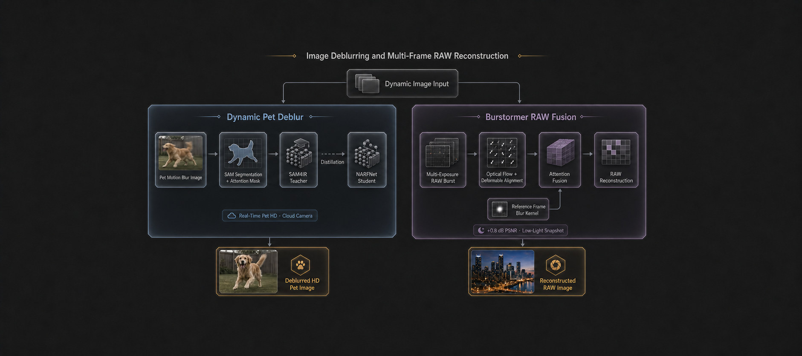
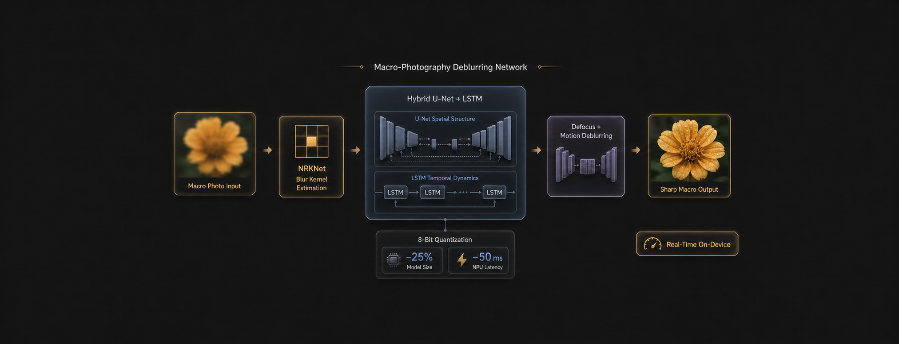
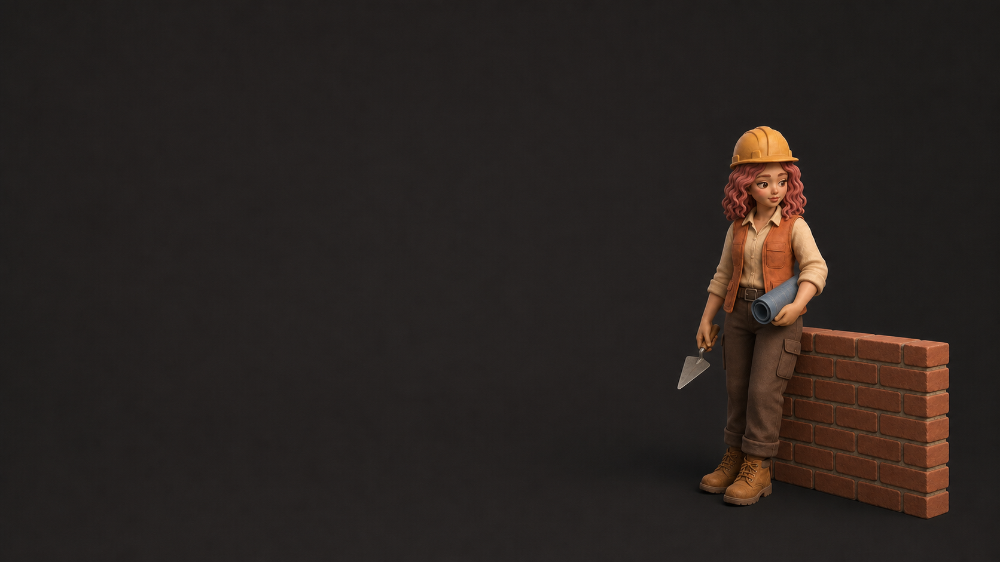

03 / WORK
Selected work.
Research and engineering work across diffusion optimization, long-context memory, mobile imaging and on-device generative AI.

01
02
03
04
05
0603 / WORK
Research and engineering work across diffusion optimization, long-context memory, mobile imaging and on-device generative AI.

01
02
03
04
05
06